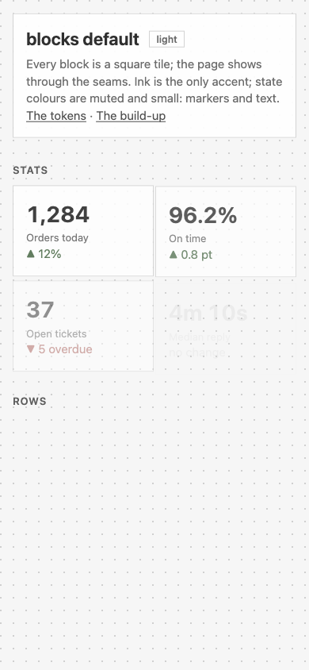
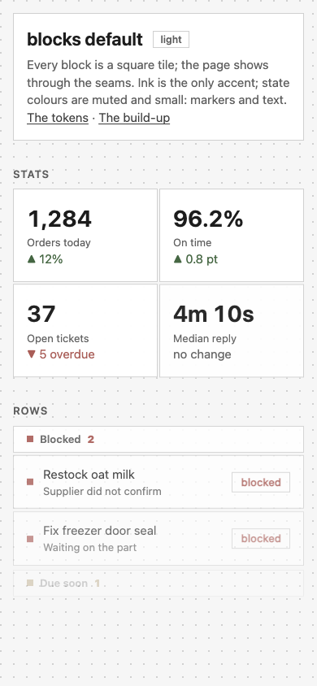
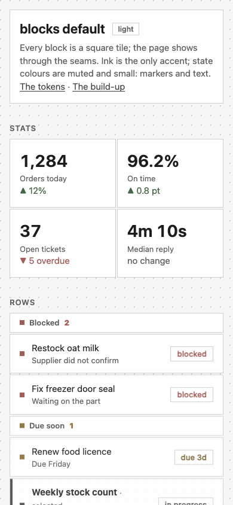
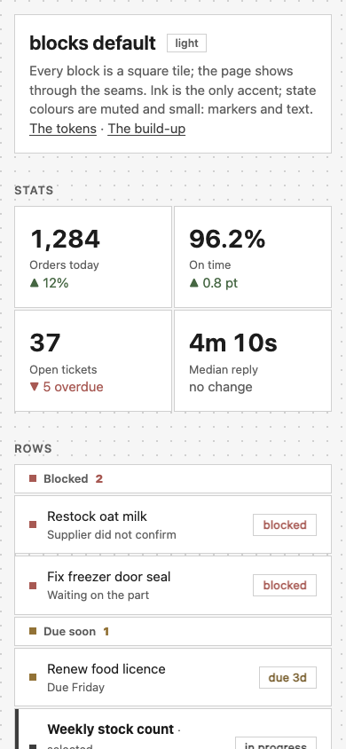
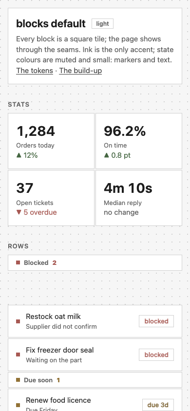
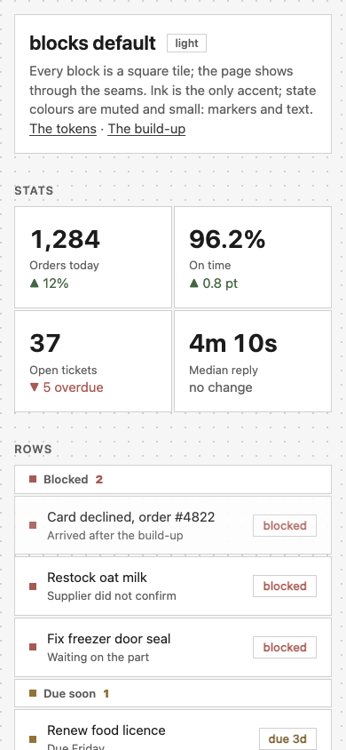
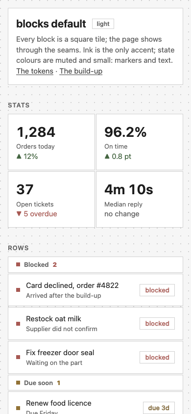

First load of a screen, 390 wide, light. Each tile rises 8 px and fades in over 160 ms; the next starts one step later. The last tile lands by 360 ms, under the 0.4 s limit. The core kinds · The tokens
First paint: page, dot grid and section labels. Every tile is in the page, still transparent.
The title and the first stats are in; the lower stats are still rising.

Stats done; the rows follow one by one, top to bottom.

The last rows settle.

Done. Nothing moves again on this screen.

The new row takes its place at once; the rows below step down without motion.

It fades in where it lands. No rise, so nothing else seems to move.

Done. Several blocks in one update fade together, with no stagger.
